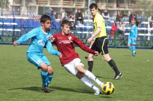
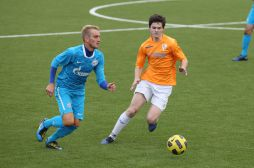
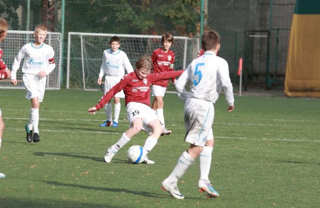

За свою недолгую новейшую историю футбольный клуб «Коломяги» заставил обратить на себя внимание футбольную общественность города. Начав путь с низшей группы чемпионата Санкт-Петербурга, уже через четыре сезона уверенно обосновался в высшем дивизионе, с каждым новым годом все ближе подбираясь к призовой тройке клубного зачета. Стоит отметить и отдельные успехи команд в разных возрастных категориях, занимавших призовые места как в первенстве города по футболу и мини-футболу, так и на международном уровне. Воспитанники «Коломяг» стали появляться и в заявках профессиональных команд.
Все эти успехи не могли остаться не замеченными, и в 2010 году ФК «Коломяги» перешел под государственную опеку, став отделением футбола при ГОУ школе-интернате «Олимпийские Надежды» Приморского района. Обретя новый для себя статус, команды игровых возрастов получили возможность, помимо бесплатного обучения, экипировки и спортивного инвентаря, проходить тренировочные сборы и участвовать в соревнованиях самого различного уровня.
В том же году «Коломяги» стали серебряным призером чемпионата города в клубном зачете. Команды 1996 и 1995 годов рождения завоевали золотые медали, 1998 и 1993-1992-го – стали обладателями серебра, а команда 1994 г.р. завоевала бронзу в первенстве Северо-Западного региона. Не остались в стороне и совсем юные воспитанники нашей школы: команды 2002, 2001 и 2000 г.р. стали победителями чемпионата филиалов ФК «Зенит».
Годом позже клуб завоевал бронзу. На этот раз на пьедестал поднимались команды 1994 и 1998 г.р., завоевавшие 3-е места в своих возрастных категориях, при этом команда старших юношей по результатам стыковых игр с «Текстильщиком» из Иваново пробилась в финал чемпионата России. Команда 1995 г.р. повторила успех годичной давности и в упорной борьбе завоевала золото чемпионата Санкт-Петербурга.
В 2016 году команда ФК «Коломяги» впервые стала победителем в самой престижной, старшей юношеской категории. Этого исторического успеха ребята 1999 года рождения добились под руководством Дмитрия Широкова.
В «Коломягах» проходят обучение и совсем юные футболисты – в возрасте от пяти лет. Основными задачами здесь являются подготовка резервов в основные команды путем общей физической подготовки, формирование широкого круга двигательных умений и навыков и обучение основам техники игры в футбол. Наличие подобной структуры позволяет выстроить определенную пирамиду со своей системой мотивации, где найдется место любому ребенку, желающему найти себя в команде соответствующего уровня. Вторые составы имеют возможность, наряду с основными командами, принимать участие в соревнованиях более доступного уровня, а игроки, проявившие себя с наилучшей стороны, всегда могут попробовать силы с более мастеровитыми воспитанниками.
В возрожденном клубе главными приоритетами стали качество обучения и его доступность. Основной целью – дать детям достойные условия для правильного физического развития, воспитать в них лидерские и волевые качества посредством спорта, научить работать в команде. Все преподаватели нашей школы – квалифицированные тренеры, имеющие высшее профессиональное футбольное образование и лицензии РФС (категория С и D). При школе работают тренеры вратарей и инструкторы по физической подготовке. Старшим тренером – методистом клуба является Мастер спорта, чемпион СССР 1984 года в составе команды «Зенит», еще в недавнем прошлом – тренер главной команды города Вячеслав Михайлович Мельников, который своим опытом и авторитетом вносит неоценимый вклад в учебно-тренировочный процесс.
Занятия на стадионе проводятся ежедневно. В настоящее время в школе проходят обучение свыше 500 мальчишек в возрасте от 5 до 17 лет, большинство из них регулярно принимают участие в серьезных спортивных соревнованиях, начиная с чемпионатов города по футболу (высшая группа) и мини-футболу и заканчивая международными турнирами, проходящими на территории ближнего и дальнего зарубежья – KOLOMYAGI CUP, HELSINKI CUP, NORWAY CUP, SCANDIC-CUP, RIGA-CUP и многих других.